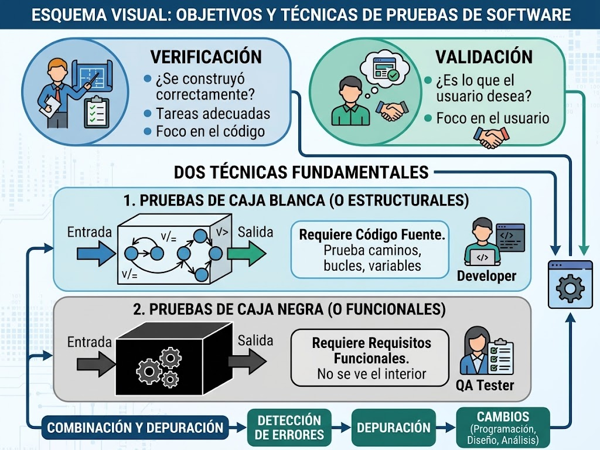
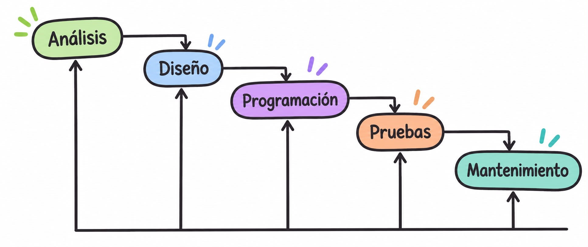
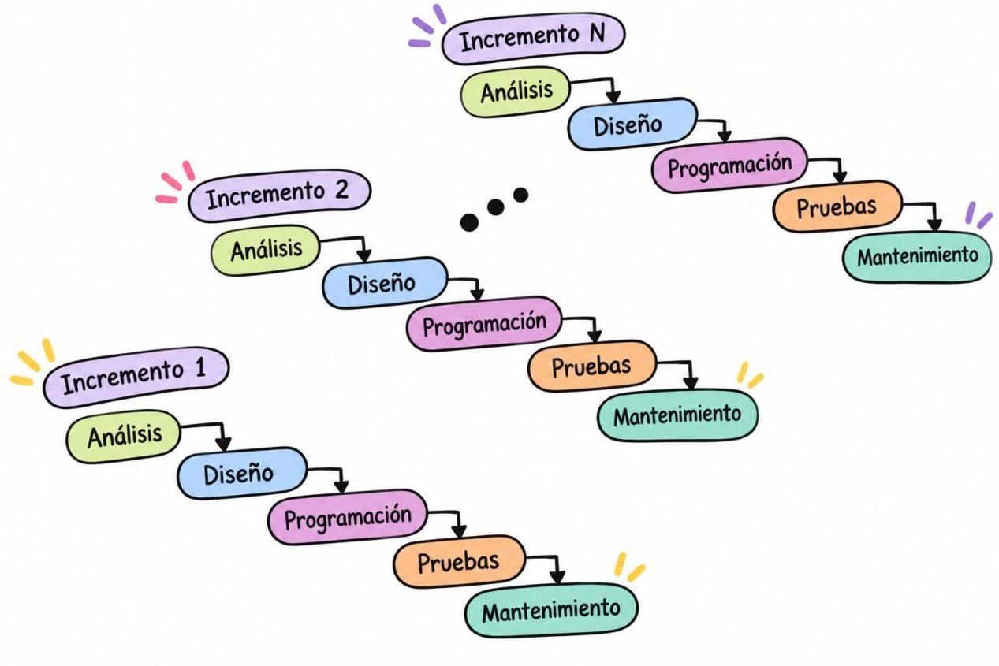
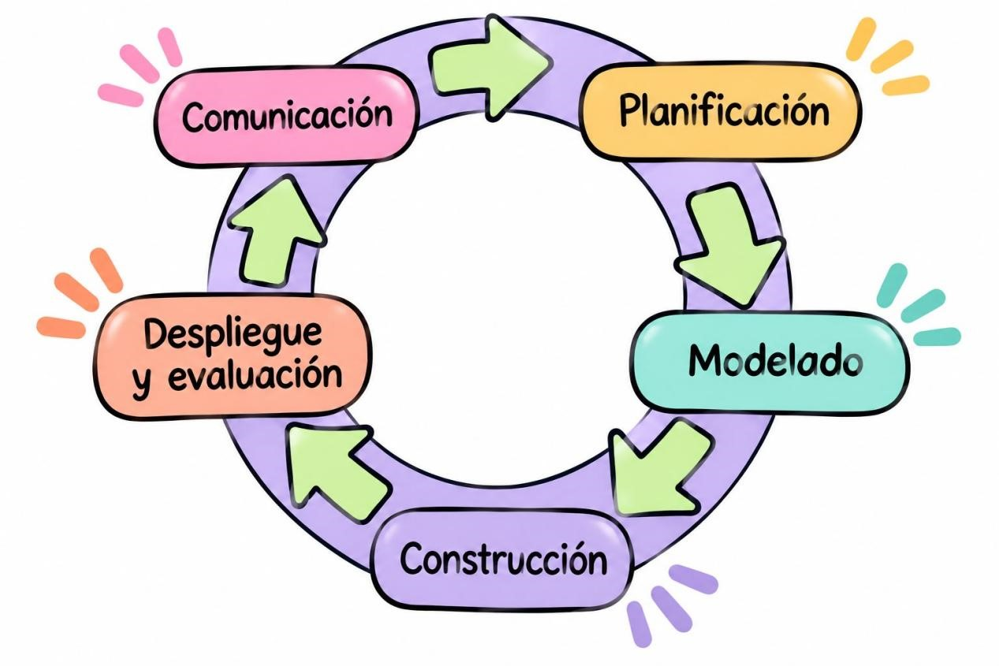
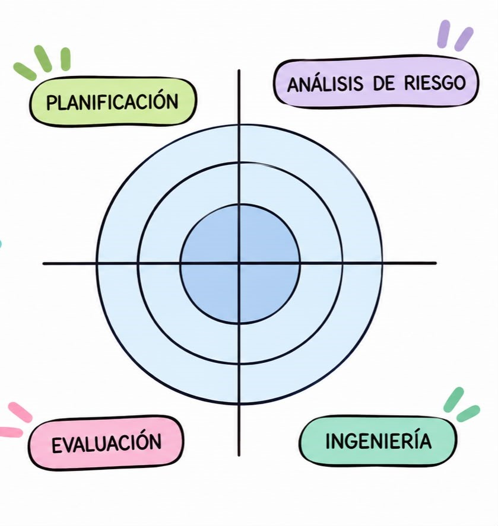

Entornos de Desarrollo
Herramientas de optimización, control de versiones, refactorización y pruebas de software.
Ingeniería del Software
Su definición propuesta por Pressman aclara que el software no es solo un programa que funciona sino que también comprende las estructuras de datos sobre las que opera el programa.
Sus problemas fundamentales eran:
- La planificación y estimación de costes eran frecuentemente muy imprecisas
- La productividad de quienes desarrollaban el software no se correspondía con la demanda de sus servicios
- La calidad del software no llegaba a veces a ser ni adecuada
La definición que propuso Fitz Bauer para la ingeniería del software es: “El establecimiento y uso de principios de ingeniería para llegar a un obtener un software rentable, que sea fiable y que funcione eficientemente en máquinas reales.”
Esto implica varios aspectos:
- Rentable: el coste de desarrollo y mantenimiento debe ser adecuado y no superar los beneficios o necesidades del proyecto.
- Fiable: el programa debe funcionar correctamente, ofrecer resultados esperados y evitar errores o fallos frecuentes.
- Eficiente: debe aprovechar bien los recursos del ordenador, como la memoria, el procesador y el almacenamiento, sin consumir más de lo necesario.
- Mantenible: debe permitir realizar modificaciones, corregir errores y añadir nuevas funciones sin tener que desarrollar todo el programa desde cero.
Tipo Test Ingeniería del Software
1. ¿Cuál es el objetivo principal de la ingeniería del software?
2. ¿Qué fase del desarrollo de una aplicación informática consiste en comprobar que funciona correctamente y detectar errores?
Fases de desarrollo de una aplicación informática
- Análisis
- Diseño
- Programación
- Comentarios: Explican partes del código para facilitar su comprensión.
- Declaraciones: Permiten definir variables, constantes y otros elementos que utilizará el programa.
- Nombres: Deben ser claros y representar la función de las variables, métodos y demás elementos.
- Líneas en blanco: Se utilizan para separar bloques de código y facilitar su lectura.
- Sangrados: Son espacios al principio de las líneas que ayudan a organizar visualmente el código y distinguir los bloques.
- Pruebas
Es la primera fase del desarrollo de una aplicación. Consiste en estudiar el problema que se quiere resolver y conocer las necesidades del cliente o usuario.
En esta fase se recopila información, se identifican los requisitos que debe cumplir el programa y se determina qué funciones tendrá. También se estudia la viabilidad del proyecto, teniendo en cuenta el tiempo, el presupuesto y los recursos disponibles.
Objetivo: Saber qué se necesita y qué debe hacer la aplicación.
En esta fase se decide cómo se va a desarrollar la aplicación. Se establece su estructura, los componentes que tendrá, cómo se organizarán los datos y cómo será la interfaz que utilizará el usuario. También se planifica la base de datos y el funcionamiento de cada parte del programa.
Consiste en desarrollar la aplicación utilizando lenguajes de programación. Los programadores escriben el código necesario para convertir el diseño en un programa real, creando las funciones y conectando los diferentes componentes para que todo funcione correctamente.
Consiste en comprobar que la aplicación funciona correctamente y cumple los requisitos establecidos. Se realizan diferentes pruebas para detectar errores, comprobar que todas las funciones trabajan como deberían y corregir los fallos encontrados. También se verifica que la aplicación sea fiable y esté preparada para utilizarse.

Tipo Test Fases de desarrollo
1. ¿Cuál es la primera fase del desarrollo de una aplicación informática?
2. ¿Qué se realiza principalmente durante la fase de análisis?
3. ¿Cuál es el objetivo principal de la fase de diseño?
4. ¿En qué fase se utilizan lenguajes de programación para desarrollar la aplicación?
5. ¿Para qué sirven los comentarios dentro del código?
6. ¿Qué son los sangrados en programación?
7. ¿Qué se pretende conseguir con la fase de pruebas?
8. ¿Cuál es el orden correcto de las cuatro fases principales?
Perfiles que intervienen en el desarrollo
Dado que el desarrollo de software se puede dividir en distintas tareas, es habitual contar con una persona experta para cada una de ellas, lo que hace que existan diferentes roles:
- Jefe de Proyecto: Se encarga de organizar y coordinar el proyecto, repartir las tareas entre los miembros del equipo y controlar los plazos, los costes y los recursos disponibles.
- Expertos del dominio: Son personas que conocen bien el sector o el problema para el que se desarrolla la aplicación. Aportan información y conocimientos para que el software responda a las necesidades reales de los usuarios.
- Analista: Estudia las necesidades del cliente y define los requisitos que debe cumplir la aplicación. Se encarga de determinar qué debe hacer el sistema.
- Arquitecto: Define la estructura general de la aplicación y decide cómo se organizan sus componentes y cómo se relacionan entre sí. También selecciona las tecnologías y soluciones técnicas más adecuadas.
- Diseñador: Establece cómo se construyen los distintos elementos de la aplicación a partir de la arquitectura definida. Diseña los componentes, las interfaces y los detalles de su funcionamiento.
- Programador: Escribe el código fuente de la aplicación utilizando los lenguajes de programación adecuados. También corrige errores y realiza modificaciones para que el software funcione correctamente.
- Probador: Se encarga de comprobar que la aplicación funciona como se espera. Realiza pruebas para detectar errores y verificar que se cumplen los requisitos establecidos.
- Encargado de la implantación: Prepara e instala la aplicación en el entorno donde se va a utilizar. También puede configurar el sistema, comprobar que funciona correctamente y ayudar a los usuarios durante su puesta en marcha.
Tipo Test Perfiles que intervienen en el desarrollo
1. ¿Cuál es la función principal del jefe de proyecto?
2. ¿Quiénes son los expertos del dominio?
3. ¿Qué función tiene el analista?
4. ¿Quién se encarga de definir la estructura general de la aplicación y organizar sus componentes?
5. ¿Cuál es la función principal del diseñador?
6. ¿Qué tarea realiza principalmente el programador?
7. ¿Quién se encarga de realizar pruebas para detectar errores y comprobar que se cumplen los requisitos?
8. ¿Cuál es la función del encargado de la implantación?
Modelos de ciclo de vida del software
Piattini proporciona la siguiente definición para el concepto de ciclo de vida: “el ciclo de vida del software es la descripción de las distintas formas de desarrollo de un proyecto o aplicación informática, es decir, la orientación que debe seguirse para obtener sistemas que puedan ser utilizados por dicho cliente”
Un ciclo de vida determina el orden en el que se deben llevar a cabo las tareas en el proceso de desarrollo de software y los criterios que se deben cumplir para realizar el paso de una tarea a otra
1.8.1 Modelo en Cascada
El modelo en cascada, también llamado ciclo de vida clásico, es el modelo más primitivo de ciclo de vida, pero ha resultado fundamental para el progreso posterior porque en el se identifican ya prácticamente todas las clases de actividades distintas que intervienen en el desarrollo y explotación de software

El desarrollo avanza en un flujo rectilíneo descendente a través de cinco actividades principales:
- Análisis: Se identifican y documentan en detalle todos los requisitos del proyecto. El resultado principal es la Especificación de Requisitos del Software (ERS).
- Diseño: Se define la estructura lógica y arquitectónica del sistema, especificando la base de datos, interfaces y módulos de programas basándose en los requisitos analizados.
- Programación (Codificación): Se traduce el diseño en código fuente ejecutable utilizando los lenguajes de programación seleccionados.
- Pruebas: Se verifica que el software desarrollado funcione correctamente, asegurando que cumple con los requisitos y que no contiene errores críticos.
- Mantenimiento: Una vez desplegado el sistema, se resuelven fallos no detectados, se realizan adaptaciones a nuevos entornos o se aplican mejoras al programa.
Para pasar de una fase a la siguiente es necesario cumplir ciertos objetivos y pasar por un proceso de revisión formal (para detectar errores lo antes posible y evitar que se propaguen a fases posteriores). Aunque acepta repeticiones o revisiones si se detecta un fallo, el flujo principal es secuencial.
Este modelo tiene, entre otras ventajas, que es fácil de comprender, de planificar y de seguir, y existen además herramientas que lo soportan. Sin embargo, entre otros problemas de ese modelo se encuentran los siguientes (Pressman, 2010):
- En la realidad es raro que los proyectos sigan un flujo puramente lineal; los cambios generan confusión a medida que el equipo avanza.
- A menudo al cliente le resulta difícil enunciar de forma explícita todos los requisitos desde el inicio. Cuanto más tarde se detecte un fallo en una fase previa, más costoso e intrusivo será corregirlo, ya que puede implicar rehacer todas las fases anteriores.
- El cliente debe tener paciencia, puesto que no dispondrá de una versión funcional del programa hasta que el proyecto esté muy avanzado
Hoy día, el desarrollo de software está sometido a multitud de cambios, motivo por el cual este modelo de ciclo de vida no resulta apropiado en la mayoría de casos.
Dadas las desventajas de este modelo, se desarrollaron con posterioridad otros modelos que se exponen a continuación.
1.8.2 Modelos de Proceso Incremental
Uno de los inconvenientes más importantes del modelo en cascada es que el cliente no dispone de una versión funcional del sistema hasta muy tarde. En este modelo, el desarrollo se concibe como un proceso en el que se van produciendo diversos incrementos o entregables con funcionalidad parcial que se van ampliando en entregas posteriores. De esta manera, se concibe el desarrollo de software como un proceso en el que se van produciendo diversos incrementos o entregables y, en cada uno de ellos, se aplican los pasos del ciclo de vida clásico (como análisis, diseño, programación, pruebas y mantenimiento).

El desarrollo avanza en un flujo rectilíneo descendente a través de cinco actividades principales:
- Reduce los riesgos de retrasos, de cambios de requisitos y los problemas de aceptación.
- Los entregables intermedios facilitan la retroalimentación por parte de los clientes, lo que ayuda a evitar problemas mayores en las siguientes entregas.
- Permiten al usuario validar el sistema a medida que se va construyendo.
Resulta recomendable emplear este modelo de ciclo de vida cuando no están bien definidos los requisitos y es muy probable que se produzcan cambios
1.8.1 Modelos de proceso evolutivo
En este modelo, el desarrollo se concibe como un proceso en el que se van produciendo diversos incrementos o entregables con funcionalidad parcial que se van ampliando en entregas posteriores. De esta manera, se concibe el desarrollo de software como un proceso en el que se van produciendo diversos incrementos o entregables y, en cada uno de ellos, se aplican los pasos del ciclo de vida clásico (como análisis, diseño, programación, pruebas y mantenimiento).
Tienen su origen en el hecho de que el software, como cualquier sistema complejo, evoluciona con el tiempo. Es frecuente que los requerimientos del negocio y del producto cambien conforme avanza el desarrollo, por lo que no resulta realista trazar una trayectoria rectilínea o fija hacia el producto final. Generalmente se comprende bien el conjunto de requerimientos iniciales o el producto básico, pero los detalles o las extensiones del sistema aún están por definirse. Estos modelos son iterativos y se caracterizan por el desarrollo de versiones del software cada vez más completas. Se presentan a continuación dos modelos de proceso evolutivo:
Construcción de prototipos:
Un prototipo se puede definir como un sistema auxiliar que permite probar experimentalmente ciertas soluciones parciales a las necesidades del usuario o a los requisitos del sistema. Puede tratarse de un modelo que describa la interacción hombre-máquina para facilitar su comprensión, o de un programa que implemente subconjuntos de la funcionalidad de la aplicación. Es recomendable seguir este modelo de ciclo de vida cuando el cliente puede definir los objetivos generales del software pero no es capaz de identificar los requerimientos en detalle, o cuando el equipo de desarrollo tiene dudas considerables sobre aspectos importantes como la eficiencia, el sistema operativo o la forma en que se llevará a cabo la interacción. El propósito principal de desarrollar el prototipo es lograr que las y los desarrolladores sepan con exactitud lo que tiene que hacer la aplicación.

- Comunicación: Se inicia con la comunicación con el cliente para definir los objetivos generales y las áreas que requieren mayor definición.
- Planificación y Modelado: Se planifica la iteración y se realiza el modelado (diseño rápido).
- Construcción y Evaluación: Se construye el prototipo y se somete a la evaluación de los participantes, quienes proporcionan retroalimentación a los desarrolladores.
Proceso iterativo: La iteración ocurre a medida que el prototipo se refina para satisfacer las necesidades de los usuarios y permitir a los desarrolladores entender mejor lo que se necesita construir, dando lugar a versiones cada vez más completas.
Modelo en espiral:
Este modelo evolutivo fue diseñado para cubrir las mejores características tanto del modelo en cascada como del modelo de construcción de prototipos, añadiendo un nuevo elemento, que es el análisis de riesgo, dentro de la actividad estructural de planificación. El software se desarrolla mediante una serie de entregas representadas como iteraciones o vueltas alrededor de una espiral.

- Durante las primeras iteraciones, lo que se entrega puede ser un modelo o un prototipo.
- En las iteraciones posteriores, se van produciendo versiones del software cada vez más completas.
Alrededor de la espiral se llevan a cabo cuatro tareas principales en cada ciclo:
- Planificación: Se identifican los objetivos que se desean conseguir en la iteración, las alternativas para alcanzarlos y las restricciones de plazos, costes, etc.
- Análisis de riesgo: Se evalúan las diferentes alternativas para la parte de desarrollo elegida, seleccionando la más ventajosa y tomando precauciones para evitar los riesgos previstos.
- Ingeniería: Se desarrolla el producto (lo que incluye análisis, diseño, programación, etc.) con el objetivo de obtener una versión más completa del sistema.
- Evaluación: El cliente evalúa el resultado del trabajo de ingeniería y se decide si se continúa para planificar la siguiente iteración.
Ventajas principales:
- Permite que tanto quienes encargan el software como quienes lo desarrollan sean conscientes de los problemas o riesgos en diferentes momentos, facilitando la reacción en caso de que ocurran.
- Si existe inseguridad en cuanto a los requisitos, se puede aplicar de forma complementaria el enfoque de construcción de prototipos para eliminar dichos riesgos.
El principal inconveniente de este modelo es, como indica Pressman (2010), que requiere mucha experiencia en la evaluación del riesgo y se basa en ella para llegar al éxito. No hay duda de que habrá problemas si algún riesgo importante no se descubre y administra.